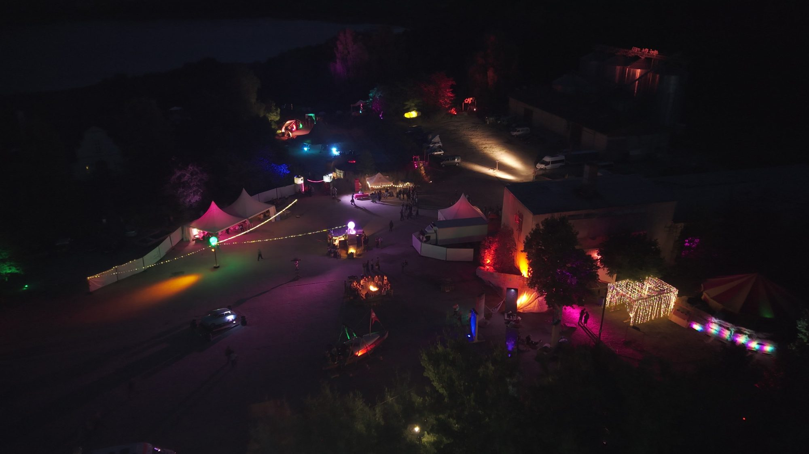
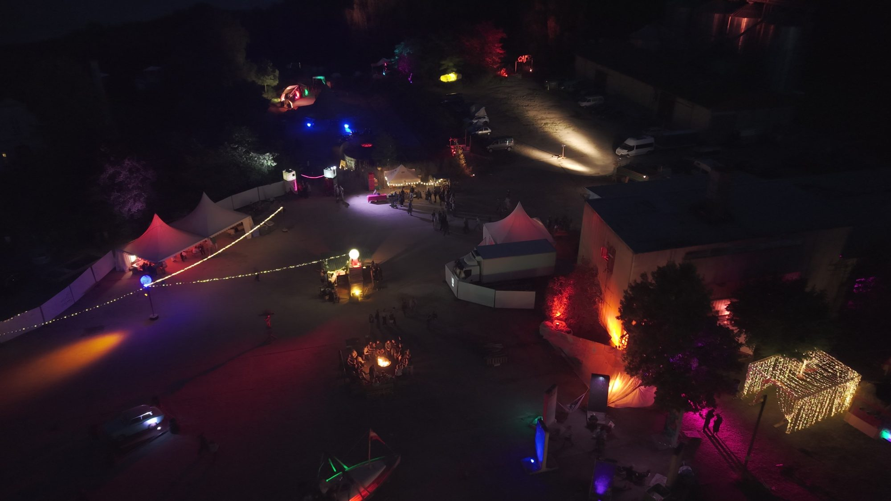
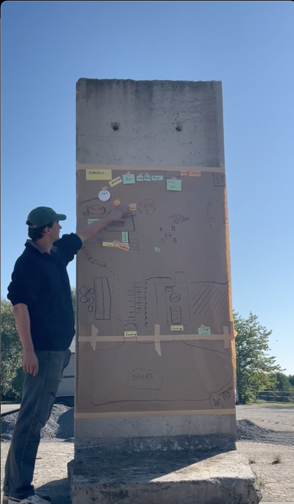
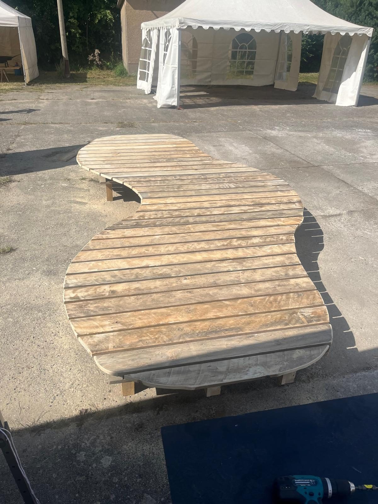
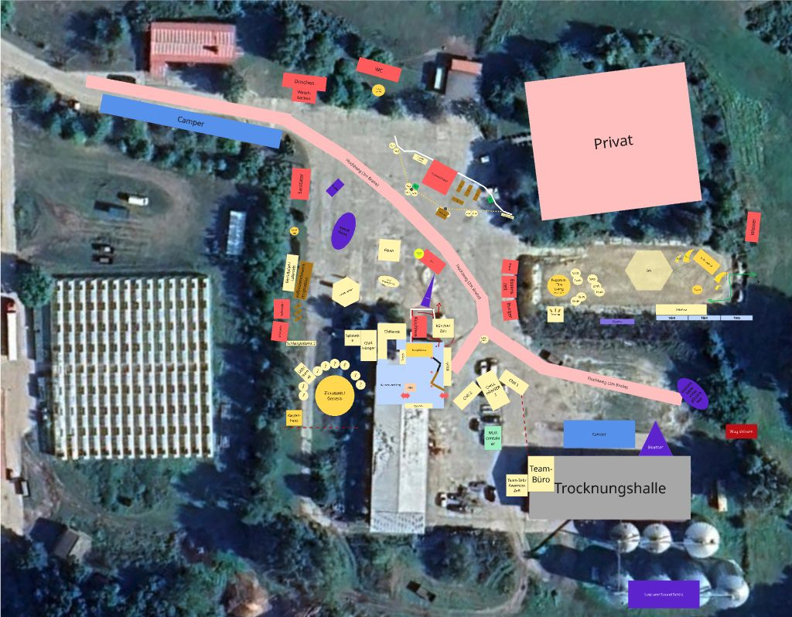

Site planning · Brodowin, Brandenburg · 2025 and 2026
Lost & Sound Festival
Site planning for a fully biological music and arts festival on an organic farm near Berlin
Overview
Lost & Sound is a fully biological music and arts festival that takes place on the grounds of an organic farm in Brodowin. It is conceived as an immersive space rather than a conventional event: there is no clear separation between audience and performers, no fixed paths, and no single way to experience the festival. Visitors are participants, moving freely between music, quiet moments, nature and spontaneous encounters.
Founded by five students and realised through the commitment of many volunteers, the festival aims to give small and emerging artists a stage and to create an environment where self-expression, connection and sustainability are lived practices rather than abstract ideas. By 2026, Lost & Sound has grown to 850 visitors, with four stages and a wide range of informal spaces in between: places to dance, to pause, to meet others, or to get lost for a while. The festival balances collective energy with intimacy, creating a temporary landscape where music, people and environment merge.

What is my role?
My role at Lost & Sound is Site Planner. I am responsible for translating many individual ideas into a coherent spatial plan that can be built and used during the festival. This involves creating maps and layouts that align artistic visions, practical requirements and the natural conditions of the site.
Rather than directing creatives or craftsmen, my task is to facilitate collaboration. I bring together volunteers, builders, artists and organisers, coordinate materials and workflows, and make sure that ideas can be realised on site without losing their character. The planning process is highly iterative and hands-on, closely connected to construction and on-site improvisation.
The work starts around six months before the festival with concept meetings, where ideas for stages, social spaces and chill-out areas are developed and discussed. Based on these inputs, a masterplan is created in close coordination with other teams, including technical production and infrastructure (toilets, food, logistics), to ensure spatial and operational alignment across the site.
One of the most challenging aspects is organising materials within a very limited budget. Relying largely on reused materials, second-hand items and donated resources requires creative problem-solving and flexible design solutions, turning material constraints into a driver for spatial creativity.

The Snake Bench
A project I am particularly proud of is a large bench structure I designed in 2025. It was conceived as a flexible social element: a place where many small groups could sit together, interact or remain slightly separate, depending on how it was used. At the same time, the structure functioned as a small stage, allowing it to shift between everyday use and performance.

Edition 2026
For the first time, a large part of the visitors found the festival through Instagram: a community that had formed online and then helped a lot with building the site.
Spatially, the goal for 2026 was to give the site a clearer edge. We used construction fences for the first time, even though the owner of the farm is generally against fences. To keep them from looking bare, we covered them with white tarpaulin and hung up coloured markers, so guests could paint them themselves. A small participatory element that turned a boundary into a canvas.
The large open asphalt area remained a challenge. A planned swing built from an old boat did not make it into the build. Instead, we concentrated on permanent timber structures for the coming years: the bar and the fire pit. The goal of making the site feel rounder and avoiding dead corners worked out really well.

Curious how a festival site comes together, from concept meeting to the last pallet? I am happy to share plans and lessons learned.
Write me: lennart.reichow@gmail.com